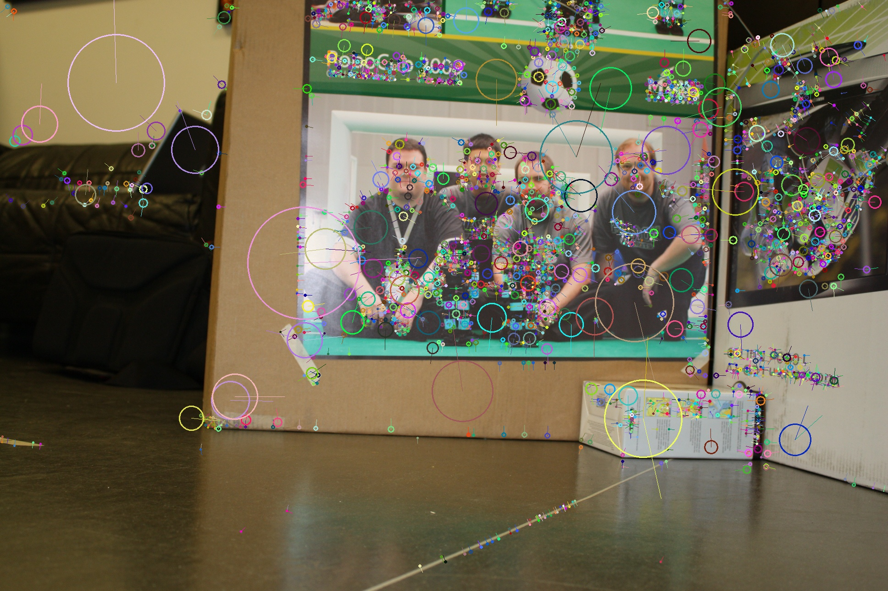
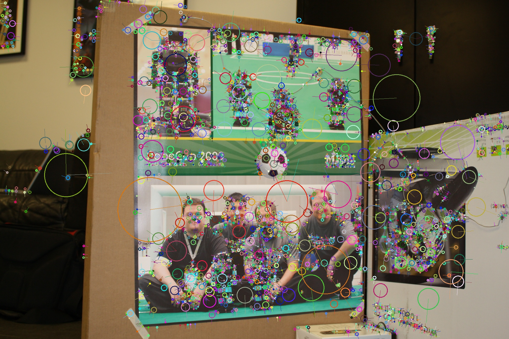
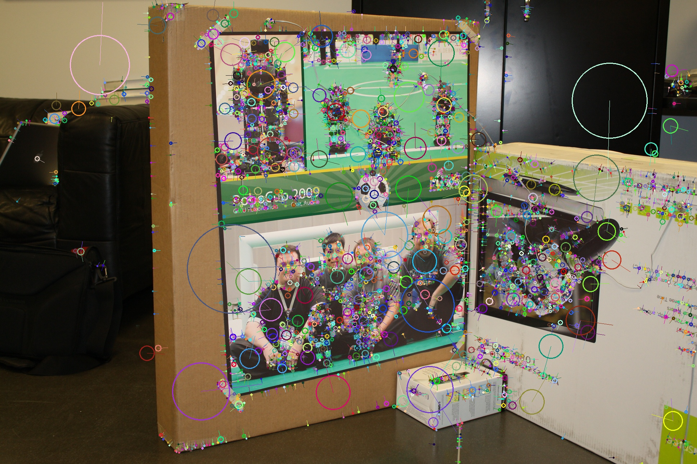
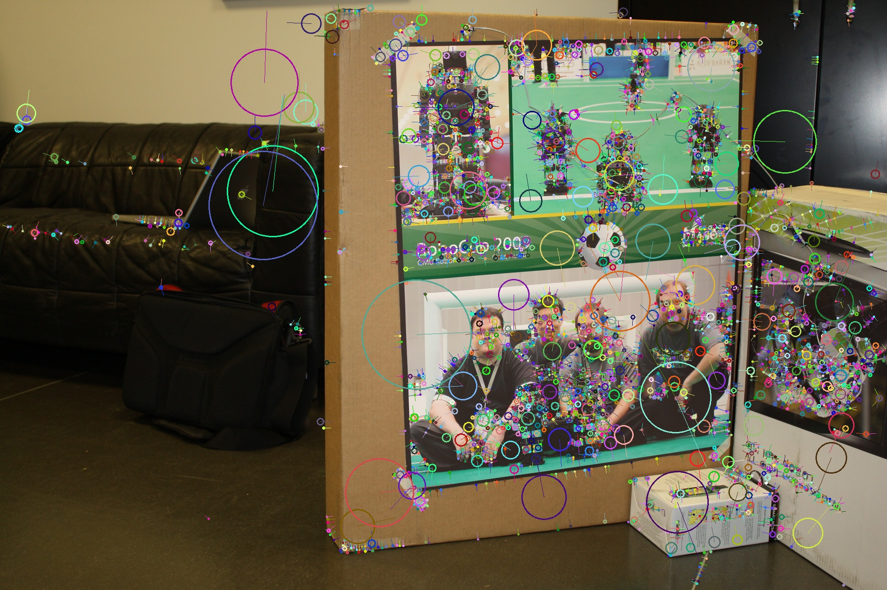
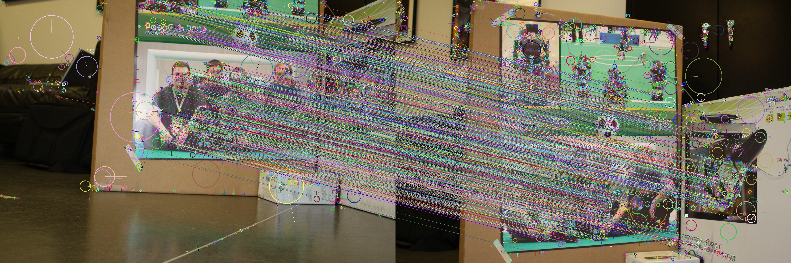
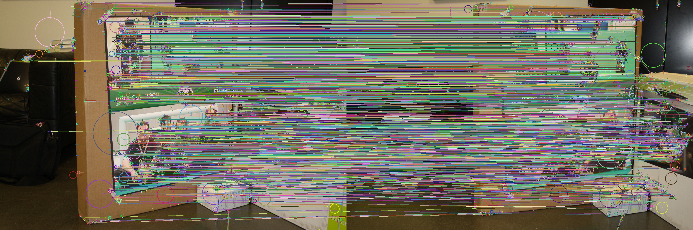
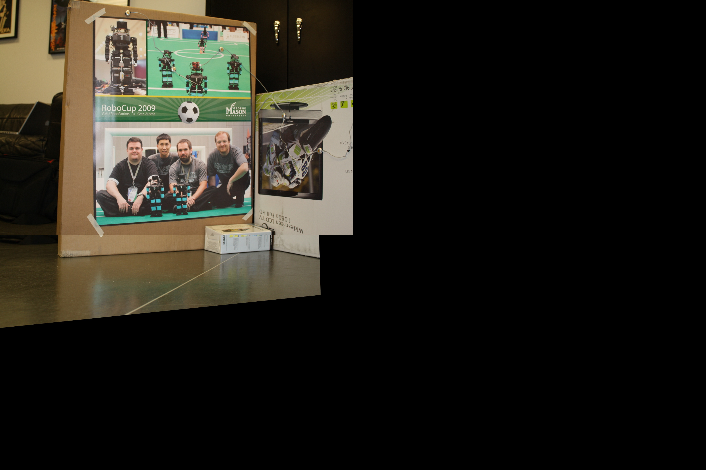
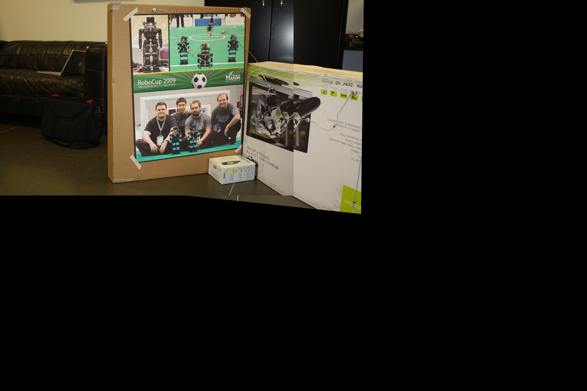

To run on another pair of images just change the filenames for the images on line 79 amd 80 (where the images are loaded). Then create the folder output and run the python script, it will just put the results in the output folder and print the homography and affine to the terminal.
Using RANSAC seemed to give the best results and when paired with a threshold of 4.0 it seemed to minimize error. A threshold of .5 when doing feature matching did well with these images to increase the relevance of the matches, if a higher value was used the resulting warp would not match as well.
| Features |  |  |  |  |
|---|---|---|---|---|
| Matches (Good vs Bad) |  |  | ||
| Stitched |  |  | ||
| Homography | \begin{bmatrix} 1.03098056e+00 & 4.06139183e-02 & -1.68094985e+02 \\ -5.15930463e-02 & 1.02049369e+00 & 5.13575756e+02 \\ 3.04008724e-05 & 3.04008724e-05 & 1.00000000e+00 \end{bmatrix} | \begin{bmatrix} 6.30633985e-01 & -3.14478096e-02 & 5.03250785e+02 \\ -1.63643906e-02 & 8.27663891e-01 & 3.87414247e+01 \\ -1.03408937e-04 & -1.02431425e-05 & 1.00000000e+00 \end{bmatrix} | ||
| Affine | \begin{bmatrix} 9.93282052e-01 & 1.22782000e-01 & -1.67895245e+02 \\ -7.22722130e-02 & 9.47581657e-01 & 5.25396292e+02 \end{bmatrix} | \begin{bmatrix} 1.08401292e+00 & -3.54465427e-02 & 3.16630699e+02 \\ 2.41798745e-02 & 8.26321163e-01 & 3.44933055e+01 \end{bmatrix} | ||